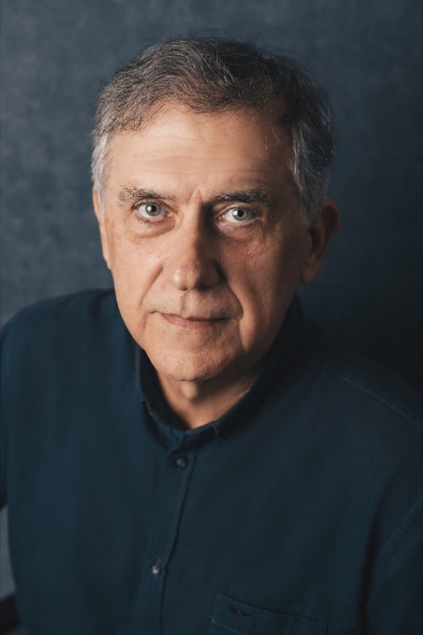
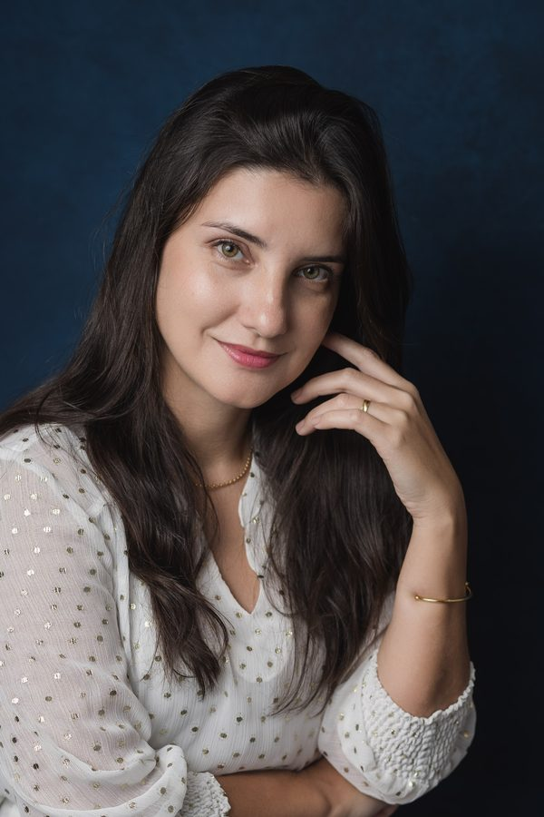
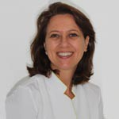
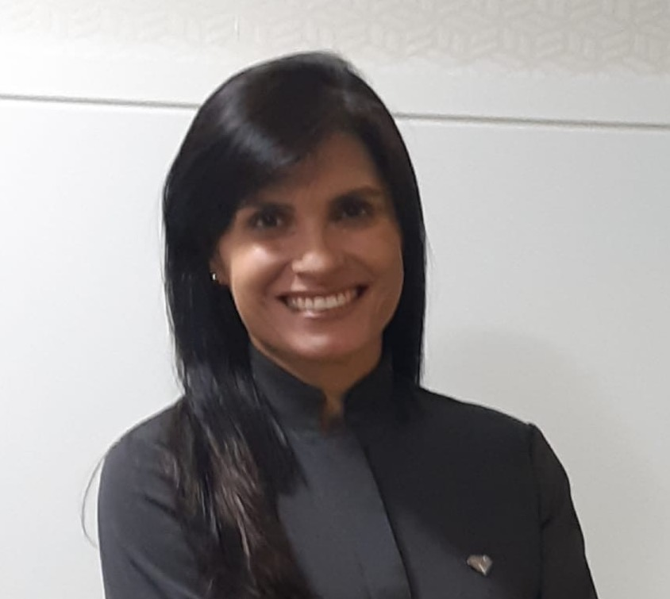

Corpo Clínico
Nossa clínica é liderada pelos Drs. Marcos Frossard e Davi Frossard, oferecendo um tratamento acolhedor e de excelência.

Dr. Marcos Frossard
Reabilitação Oral, Prótese e Estética
Formado pela UEL e com mais de 30 anos de experiência, Dr. Marcos atua na área de reabilitação oral, prótese e estética. Prioriza a excelência em seus atendimentos e busca atualizar-se em cursos e congressos internacionais, mantendo assim um elevado padrão de resolução de seus casos clínicos.

Dr. Davi Heringer Frossard
Implantodontia e Cirurgia Periodontal
Formado na UERJ, atua e possui especialização em Implantodontia pela Faculdade São Leopoldo Mandic. É um profissional que valoriza a renovação dos conhecimentos e frequentou vários cursos, como atualização em cirurgia periodontal em Bauru, cirurgia oral menor e atualização em restaurações estéticas pela PUC. Na área acadêmica, leciona Implantodontia em cursos de pós-graduação.

Dra. Luciana Vieira Peroni
Prótese Dentária e Odontopediatria
Formou-se em Odontologia pela UERJ; especialização em Prótese Dentária; e, Mestrado Acadêmico pela FO-UERJ. Atua no atendimento adulto e infantil na clínica.

Dra. Magali Ribeiro
Periodontia
Graduação PUC-RS, especialização UFRG, mestrado e doutorado na UERJ. Professora de Periodontia IOPUC-RJ, atuando na área de Periodontia.

Dra. Carolina Ganimi
Endodontia e Implantodontia
Formada pela UNESA, especialista em endodontia e implantodontia pela associação Brasileira de Odontologia.